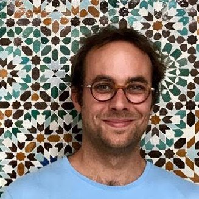

Rust surgió como un proyecto personal iniciado en 2006 por Graydon Hoare, empleado de Mozilla. Mozilla comenzó a patrocinar el proyecto en 2009 y posteriormente lo anunciaría en 2010. La primera version pre-alfa numerada del compilador se produjo en enero de 2012 y la primera version estable (Rust 1.0) se publicó el 15 de mayo de 2015. Junto con la escritura estática convencional, antes de la versión 0.4, Rust también admitía typestates. El sistema typestate modeló aserciones antes y después de las sentencias del programa, mediante el uso de una checksentencia especial. Las discrepancias se pueden descubrir en el momento de la compilación, en lugar de cuando se ejecuta un programa, como podría ser el caso de las aserciones en código C o C ++. El concepto typestate no era exclusivo de Rust, ya que se introdujo por primera vez en el lenguaje NIL. Los typestates se eliminaron porque en la práctica se usaban poco, aunque la misma función aún se puede lograr con un patrón de marca. En 2015 se convertiría en el tercer lenguaje de programación mas querido en la encuesta anual de Stack Overflow y ocupó el primer lugar entre 2016 y 2020.
En Agosto de 2020, Mozilla realizó una reestructuracion de la corporativa despidiendo a 250 de sus 1000 empleados en todo el mundo producido por la pandemia de COVID-19 entre los que se encontrarían colaboradores activos de Rust. A la semana siguiente, el equipo central de RUST anunció que los planes para una fundacion de Rust estaban en marcha. El primer objetivo de la fundación sería tomar posesión de todas las marcas comerciales y nombres de dominio, y asumir la responsabilidad financiera por sus costos. El febrero de 2021, sus cinco empresas fundadores anunciaron la formacion de la Fundacion Rust y el 6 de Abril de 2021, Google anunció la compatibilidad con Rust dentro del proyecto de código abierto de Android como alternativa a C/C++. Las empresas fundadores de la fundación son: